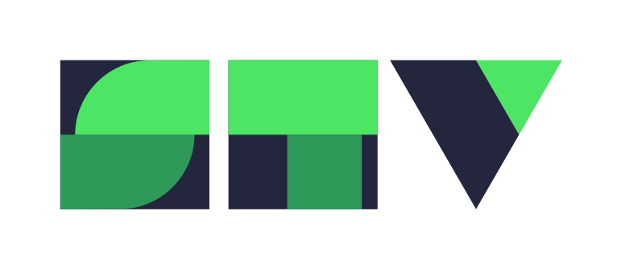
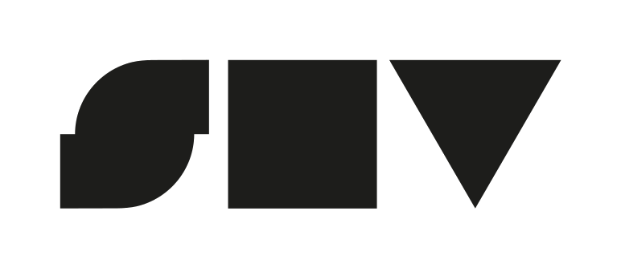

Лимит-дроп
Худи CREW — New STV Era
Первый дроп новой эры бренда. Лимит 50 шт.
1200
Дизайн-система
Витрина для самопроверки фирстиля. Источник истины — брендбук СТВ.
Все токены живут в styles/tokens.css, компоненты — в styles/base.css.
Доминанта-пара: зелёный + тёмно-синий. Остальные три — акценты.
HEX отсэмплены из PDF (стр. 12) — ориентир, не нормативные значения.
Только готовые PNG как <img>. Не перекрашиваем, не искажаем, не поворачиваем, без теней/обводки (6 «нельзя» брендбука).

Основная (цветная) — на светлом фоне
Монохром / выворотка — на тёмном фоне

Версия для малых форматов (носители < 10 мм)
Инлайн-SVG (assets/icons.svg), геометрия из элементарных фигур, цвет — зелёный через currentColor.
Брендовый спрайт пиктограмм (для справки): assets/pictograms-transparent.png.